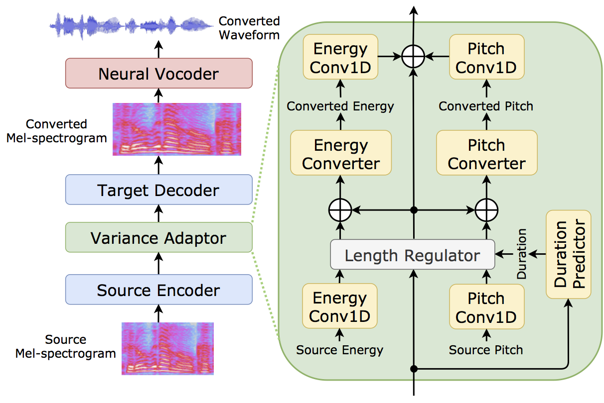

Non-autoregressive sequence-to-sequence voice conversion
- Tomoki Hayashi (TARVO Inc. / Nagoya University)
- Wen-Chin Huang (Nagoya University)
- Kazuhiro Kobayashi (TARVO Inc. / Nagoya University)
- Tomoki Toda (Nagoya University)
Abstract

This paper proposes a novel voice conversion (VC) method based on non-autoregressive sequence-to-sequence (NAR-S2S) models. Inspired by the great success of NAR-S2S models such as FastSpeech in text-to-speech (TTS), we extend the FastSpeech2 model for the VC problem. We introduce the convolution-augmented Transformer (Conformer) instead of the Transformer, making it possible to capture both local and global context information from the input sequence. Furthermore, we extend variance predictors to variance converters to explicitly convert the source speaker’s prosody components such as pitch and energy into the target speaker. The experimental evaluation with the Japanese speaker dataset, which consists of male and female speakers of 1,000 utterances, demonstrates that the proposed model enables us to perform more stable, faster, and better conversion than autoregressive S2S (AR-S2S) models such as Tacotron2 and Transformer.
Audio samples (Japanese)
- Target: Target speech (24,000 Hz).
- Tacotron2: Converted speech by Tacotron2-based AR-S2S model.
- Transformer: Converted speech by Transformer-based AR-S2S model.
- Proposed: Converted speech by the proposed NAR-S2S model.
The neural vocoder is the same among the models.
We use ParallelWaveGAN as the neural vocoder.
たとえば、プログラムを書く仕事は、機械なしでも、やろうと思えばできる。
| Male->Female | Female->Male |
|---|---|
| Target | Target |
| Tacotron2 | Tacotron2 |
| Transformer | Transformer |
| Propoed | Proposed |
そのうちに、日が暮れて、寒い風が、ヒューヒュー、吹きはじめました。
| Male->Female | Female->Male |
|---|---|
| Target | Target |
| Tacotron2 | Tacotron2 |
| Transformer | Transformer |
| Propoed | Proposed |
小柄な男は、部屋の中を、しげしげと、覗き込みながら言った。
| Male->Female | Female->Male |
|---|---|
| Target | Target |
| Tacotron2 | Tacotron2 |
| Transformer | Transformer |
| Propoed | Proposed |
Author
Tomoki Hayashi (@kan-bayashi)
e-mail: hayashi.tomoki@g.sp.m.is.nagoya-u.ac.jp